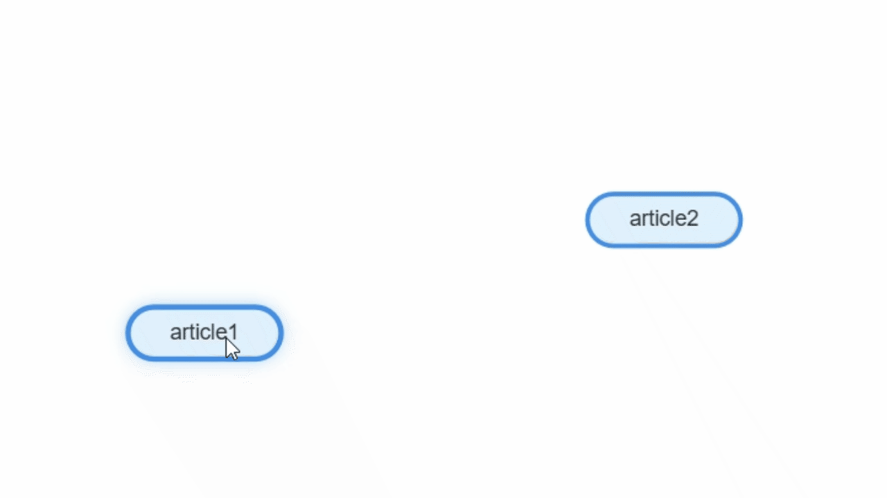
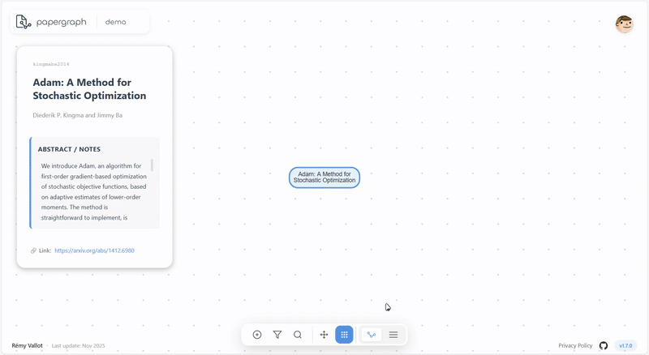

Map your research.
Connect ideas.
Organize and visualize academic literature through an elegant visual graph interface.
Build your research graph
Add articles with a single click. Import from DOI, arXiv, BibTeX, or add manually. Each article becomes a node in your visual knowledge network.

Connect related papers
Draw connections between articles to visualize relationships. Label each connection to explain how papers relate—citations, similar methods, contrasting views.

Organize with tags and zones
Color-code articles by topic or theme. Create spatial zones to group related papers. Filter your graph by tags to focus on specific research areas.

Switch between views
Toggle between graph view for visual exploration and list view for detailed reference management. Export to PDF, PNG, BibTeX, or JSON for backups.
